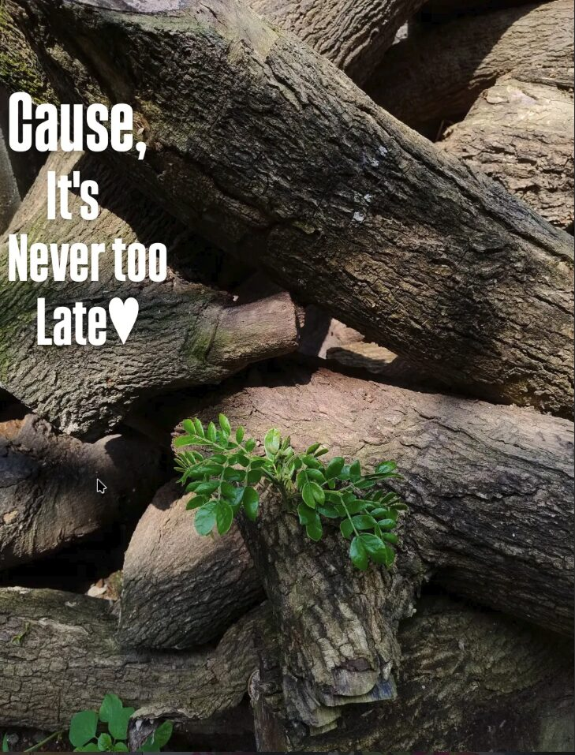
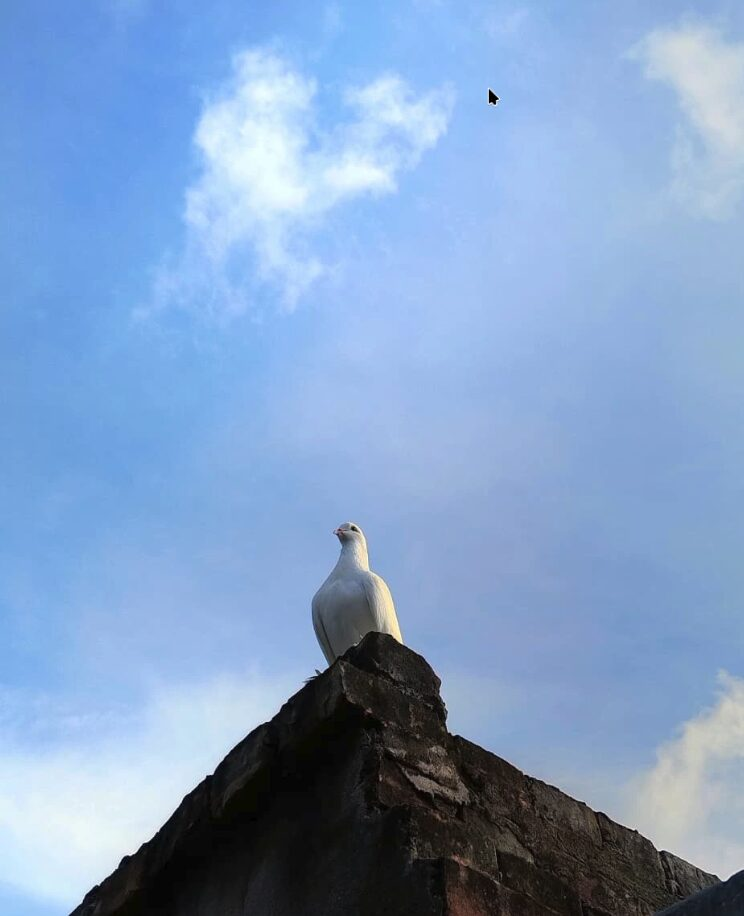
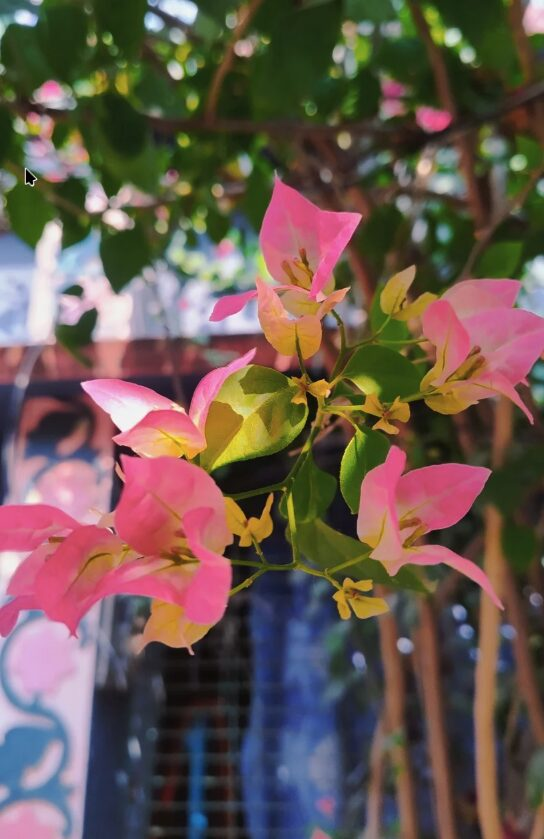
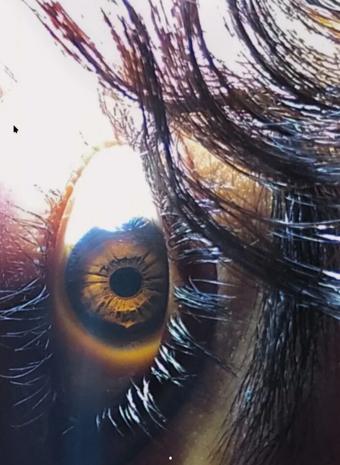

> LOADING FRAGMENT 3...
You take photos of things people walk past. That's not a hobby. That's a way of being alive. Here are five of yours I keep coming back to.

Old wood. New leaves. Nobody gave it permission. It did it anyway.

Alone, but not lonely. There's a difference. You photographed it.
You noticed the falling part. Most people only shoot the bloom.

You pointed the camera at the sky through the flowers. Most people look down.

You look at things like they're worth looking at. That's the whole thing.
Nature doesn't pose. You just catch it being itself. That's a rare skill.